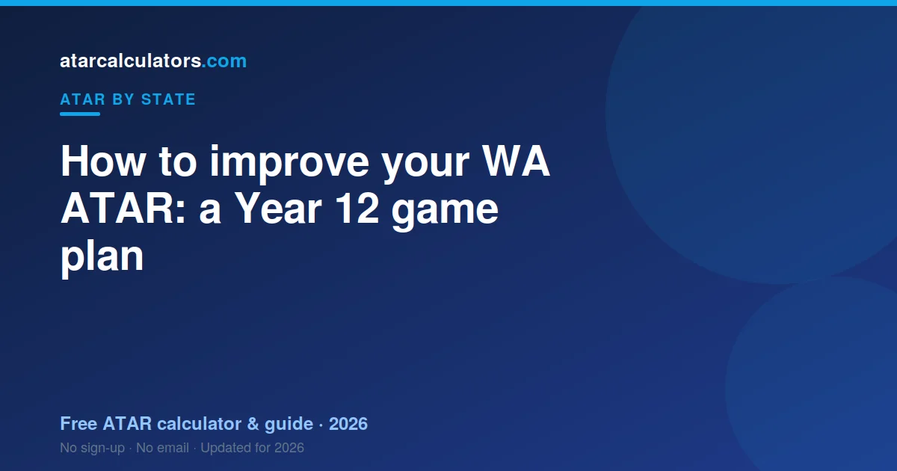

To improve your WA ATAR, focus on your ranking within each subject, because that drives scaling. Master the exam, since WA courses are exam-heavy. Choose subjects you can score highly in, keep your best four scores strong, and check which bonus points you qualify for. Small, steady gains across your best subjects add up to a higher rank.
Key takeaways
- Your rank within each subject drives scaling, so aim to climb it.
- WA is exam-heavy, so exam skill matters as much as knowledge.
- Choose subjects you can score highly in, not just ones that scale.
- Your best four scaled scores count, so protect them.
- Bonus points can lift your selection rank above your raw ATAR.
- Consistent work beats last-minute cramming in a scaled system.

Focus on your ranking within each subject
In a scaled system, what matters most is where you sit within each subject. Moving up your subject group lifts your scaled score.
So treat every assessment as a chance to climb. A steady rise through the year is worth more than one strong result followed by weak ones.
This is good news. You do not need to beat the whole state. You need to do a little better than the students around you in each subject.
Master the exam, not just the content
WA courses lean heavily on the final exam. Knowing the content is not enough. You also need to show it under time pressure.
So practise past exams early and often. Learn the mark schemes. See how examiners award marks, and write your answers to match.
- Do full past papers under timed conditions.
- Mark your own work against the official scheme.
- Focus revision on the questions you lose marks on.
Exam skill is a subject in itself. Students who practise it often gain several marks, which can move their scaled score.
Choose subjects you can do well in
Subject choice is a real lever, but not the way many students think. Picking a high-scaling subject you struggle in usually backfires.
Your scaled score depends on your place in the group. So pick subjects where you can finish near the top. If two options scale similarly, choose the one you will score better in. Our scaling guide explains the trade-off.
Protect your best four scores
Your ATAR uses your best four scaled scores. Taking a fifth ATAR course gives you a safety margin.
That way, if one subject goes poorly, it may not count at all. It takes pressure off any single result. See how the best-four rule works in the WA ATAR guide.
Use your school assessments well
Your school-based assessments feed into your results too. They are not just practice. They shape where you sit before the exam.
So do not coast on early assessments. A strong, steady record through the year builds a buffer and keeps your rank high going into exams.
Get English competency sorted early
WA has an English competency rule. If you do not meet it, you get no ATAR, even with a strong TEA.
You usually meet it by reaching the required standard in an English ATAR course. Check early that your English course puts you on track, so it never becomes a problem. The WA ATAR guide explains the rule.
Use adjustment and bonus points
Bonus points do not change your ATAR. But they change your selection rank, which is what universities use for offers.
WA universities award them for factors like location, subjects and personal circumstances. Check what you qualify for early. Our bonus points calculator and ATAR predictor show the combined effect.
Study habits that move the needle
Not all study is equal. Some habits give far more return than others.
- Space your revision across weeks, instead of cramming.
- Test yourself from memory, rather than just re-reading notes.
- Fix your weak topics first, since they cost the most marks.
- Sleep well before exams, because tired brains lose easy marks.
Small changes to how you study, repeated over months, add up to a real difference in your marks.
Common time-wasters to avoid
Some effort feels productive but changes little. Rewriting neat notes for hours is one example. Highlighting whole pages is another.
These feel like study, but they do not test your memory or fix your gaps. Swap them for active recall and past papers, which do.
Build a study timetable that works
A good timetable turns vague plans into real study. Keep it simple, so you actually follow it.
Block set times for each subject across the week. Give more time to your weaker subjects and your best four. Build in breaks, because rest keeps you sharp.
- Study in focused blocks, then take a short break.
- Rotate subjects, rather than cramming one for hours.
- Review the timetable weekly and adjust what is not working.
The goal is steady, repeatable effort. A plan you keep beats a perfect plan you abandon.
Handle exam stress
Some nerves are normal and even helpful. Too much stress, though, can cost you marks and sleep.
Simple habits help. Sleep well, move your body, and take real breaks. Practise past papers so the exam feels familiar, not frightening.
If stress feels overwhelming, talk to someone you trust, like a teacher, parent or school counsellor. Support is a strength, not a weakness.
Get help: teachers, tutors and resources
You do not have to do this alone. Your teachers are your first and best resource, and they know the courses closely.
Ask questions in class, and go to your teacher when a topic will not click. Study groups can help too, as long as they stay focused.
Free resources like past papers, mark schemes and revision guides are gold. Use them before paying for anything, since they are made for your exact courses.
Track your progress
You improve what you measure. Keep a simple record of your marks and where you sit in each subject.
Then estimate your ATAR as you go, using our WA ATAR calculator. If you are below your target, adjust now, while you still have time to act.
Common questions
Can you still improve your ATAR in Year 12?
Yes. Because your ATAR reflects your ranking within each subject, steady improvement in your assessments and exams can lift your scaled scores and your final ATAR.
Does subject choice affect your ATAR?
Yes, but mainly through how well you score. Choose subjects you can perform strongly in. A high-scaling subject only helps if you rank well within its group.
How important are exams in WA?
Very. WA courses lean heavily on the final exam, so exam skill matters as much as knowing the content. Practising past papers under timed conditions is one of the best ways to gain marks.
Do bonus points raise your ATAR?
No, they raise your selection rank, not your ATAR itself. That rank is what universities use for offers, so bonus points can still bring a course within reach.
How many ATAR courses should I take?
At least four, because your ATAR uses your best four scaled scores. Most students take five, which gives a safety margin if one subject goes poorly.
What is the fastest way to lift my ATAR?
There is no single trick, but improving your rank in each subject is the most reliable lever. Do that through steady assessment results, strong exam skills and smart subject choice.
Does the English rule affect my ATAR?
Yes. You must meet an English competency rule to get an ATAR at all. Sort it early by reaching the required standard in an English ATAR course, so it never blocks your result.
How do I know if I'm on track?
Track your marks and where you sit in each subject, then estimate your ATAR as you go. If you are below your target, you still have time to adjust your study and subject focus.
How should I handle exam stress?
Some nerves are normal. To keep them in check, sleep well, move your body, take real breaks, and practise past papers so exams feel familiar. If stress feels overwhelming, talk to a teacher, parent or school counsellor.